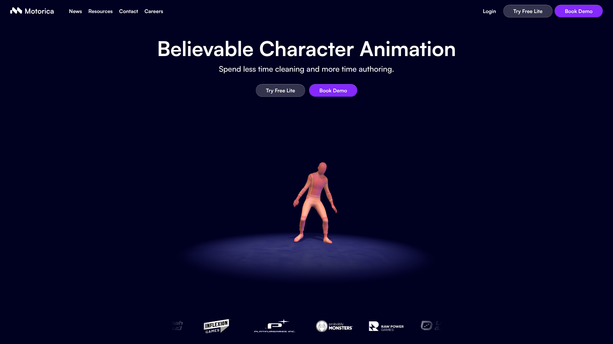

> 調研日期：2026-06-19
> 舊版站：https://motorica-ai.webflow.io
▲ Motorica Motion Matching Made Simple
Motorica 是斯德哥爾摩的 AI 動畫公司，2020 年成立（2023 年正式商業化），2025 年 6 月獲得 €5M 種子輪融資（Angular Ventures + Luminar Ventures）。由 SIGGRAPH 獲獎 ML 研究者 Gustav Henter 和 Simon Alexanderson 共同創立，他們在 2019 年實現了世界首個深度生成式動作合成模型。
核心定位：AAA 級遊戲角色 Locomotion 動畫生成引擎 — 專注於移動類動畫（走、跑、轉向、加速、減速等），為 Motion Matching 系統生成完整資料集。
解決的問題：

使用者：Platinum Games、Inflexion Games、Probably Monsters、Raw Power Games 等 AAA 工作室
▲ Motorica 官方首頁 — AAA 級 Locomotion 動畫引擎
| 功能 | 說明 |
|---|---|
| Motion Synthesis | AI 從真實 Mocap 資料合成新動畫，確保物理正確性 |
| 150+ Style Library | 超過 150 種預設動作風格可混合搭配 |
| Style Cloning | 提供 10 分鐘 Mocap → 訓練客製化「數位演員」 |
| Motion Factory | 批次生成 Motion Matching 完整資料集（覆蓋所有移動參數） |
| Motion Control | 精確控制 Root Motion、速度、加速度、轉向半徑 |
| Path Authoring | 定義移動路徑，自動生成沿途動畫 |
| Real-time Direction | 在 3D 場景中即時「導演」虛擬演員 |
| Plugin Integration | UE5 Plugin 直接匯入 + 自動 Retarget + Pose Search Database |
| 項目 | 說明 |
|---|---|
| 速度提升 | 比傳統流程快 200 倍（官方數據） |
| 動畫品質 | AAA 級，基於專業 Mocap 演員表演合成 |
| 腳部接觸 | 自然紮實的 foot contacts 和重心轉移 |
| 決定性控制 | Deterministic — 相同輸入 = 相同輸出（非隨機生成） |
| 覆蓋保證 | 可保證動畫覆蓋率（所有移動參數組合都有對應動畫） |
| 資料來源 | 世界最大全授權 Mocap 資料庫之一 |
| 輸出品質 | 已清理的動畫曲線（不是 raw mocap key-per-frame） |
| 軟體 | 支援方式 |
|---|---|
| Unreal Engine | Plugin（自動 retarget + pose search database） |
| Unity | 匯出檔案匯入 |
| Maya | Plugin / 匯出 |
| Blender | Plugin / 匯出 |
| MotionBuilder | 匯出 |
| Godot | 匯出 |
| Cinema 4D | 匯出 |
| 資源 | 連結 |
|---|---|
| 官方 Getting Started 文件 | 官網 Resources 區域 |
| YouTube（推測） | 搜尋 "Motorica AI" |
| Motion Matching 教學系列 | https://www.motorica.ai/blog/download-the-free-motorica-motion-matching-dataset |
| Discord 社群 | 官網 Resources 連結 |
| Forbes 報導 (2025/06) | https://www.forbes.com/sites/charliefink/2025/06/24/motorica-raises-5-million-to-replace-mocap-with-generative-ai/ |
| Unite.AI 報導 | https://www.unite.ai/motorica-raises-e5m-to-usher-in-the-generative-ai-era-of-character-animation/ |
| 免費 Motion Matching 資料集 | https://www.motorica.ai/blog/download-the-free-motorica-motion-matching-dataset |
| 系統狀態 | https://status.motorica.com |
| 方案 | 說明 |
|---|---|
| Free Lite | 免費基本版（功能受限） |
| Paid Subscription | 進階功能（具體價格需 Book Demo 確認） |
| Enterprise / Studio | AAA 工作室合作（聯繫業務） |
> ⚠️ 具體定價未在官網公開，需要 Book Demo 洽談。根據其定位（AAA 級工具、Platinum Games 使用者），推測為 B2B 企業級定價。
| 面向 | 評估 |
|---|---|
| 技術互補性 | ⭐⭐⭐⭐⭐ 極佳 — Kimodo 做表演動作(combat/gesture)，Motorica 做 locomotion |
| 格式相容 | 兩者都輸出標準骨架動畫格式，可在 Blender 統一處理 |
| 品質層級 | Motorica = AAA 級 locomotion；Kimodo = 研究級 text-to-motion |
| 覆蓋面互補 | Kimodo 擅長：表演/手勢/戰鬥特效；Motorica 擅長：移動/轉向/NPC 行為 |
| Motion Matching | Motorica 可為遊戲角色生成完整 MM 資料集，Kimodo 補充特殊動作 |
| 風格統一 | Motorica 的 Style Clone 可能幫助統一來自不同來源的動作風格 |
遊戲角色動作系統：
[Locomotion 層] ← Motorica AI
• 走/跑/轉向/加速/減速
• Motion Matching 完整資料集
• NPC 巡邏/移動行為
[表演動作層] ← Kimodo + Viggle
• 戰鬥招式
• 特殊動作（跳躍/翻滾/施法）
• 情緒表演
• 互動動畫
[混合/清理層] ← Blender + Retarget Tools
• 統一骨架
• foot contact 修正
• 風格一致化
• 匯出到遊戲引擎
┌─────────────────────────────────────────────────────────┐
│ AI 動作量產工作流中的 Motorica 定位 │
├─────────────────────────────────────────────────────────┤
│ │
│ Motorica 的核心價值： │
│ 「Motion Matching 資料集的一鍵生成器」 │
│ │
│ 傳統方式： │
│ 定義需求 → 安排 Mocap → 清理 → 補洞 → 數月完成 │
│ │
│ Motorica 方式： │
│ 定義參數 → 選擇風格 → Generate → 數分鐘完成 │
│ │
│ 對我們的價值： │
│ • 遊戲角色 locomotion 系統的動畫資料源 │
│ • NPC 大量移動動畫的批次生成 │
│ • Motion Matching 實作的最佳搭檔 │
│ • 與 Kimodo 形成完美互補（移動 vs 表演） │
│ │
└─────────────────────────────────────────────────────────┘
| 項目 | 評分 (1-5) |
|---|---|
| 與我們目標的相關性 | ⭐⭐⭐⭐⭐ |
| 技術成熟度 | ⭐⭐⭐⭐⭐ |
| 易用性 | ⭐⭐⭐⭐ |
| 性價比 | ⭐⭐⭐（需確認價格） |
| Pipeline 整合潛力 | ⭐⭐⭐⭐⭐ |
| 量產化適合度 | ⭐⭐⭐⭐⭐ |
推薦等級：🟢 強烈推薦 — Locomotion + Motion Matching 領域的最佳解。與 Kimodo 形成完美互補。建議申請 Free Lite 試用，並 Book Demo 了解定價。